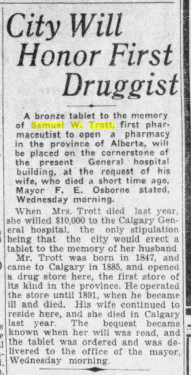
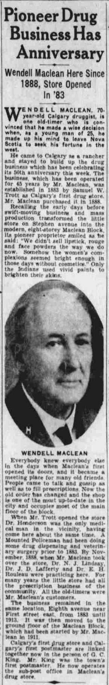

Samuel William Trott
Samuel Trott (1847 - 1891) arrived in Calgary in 1885 and established Alberta's first pharmacy. After his death, he was honoured with a memorial tablet at the Calgary General Hospital (since destroyed). In 1891, the last year of his life, he became the first person to hold title on a half section of land covering current day Hillhurst and surrouding areas.

